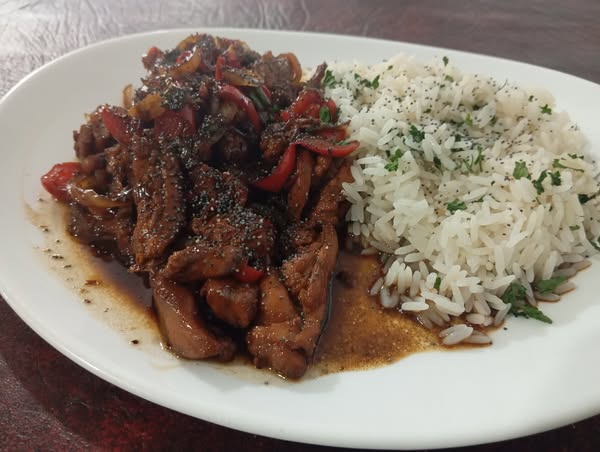

Platos destacados

Vivi y Lolo empezó cuando una chef con alma italiana y un músico con corazón de barrio se cruzaron en una feria de comida. De esa mezcla nació un restaurante donde cada plato tiene historia y cada cliente es parte de la familia. Cocinamos con amor, servimos con alegría y abrimos nuestras puertas para que te sientas como en casa.
Nos encontramos en:
Tucumán 359, B1667DMG Tortuguitas, Provincia de Buenos Aires
Mantente al día con nuestras novedades, eventos y promociones especiales.